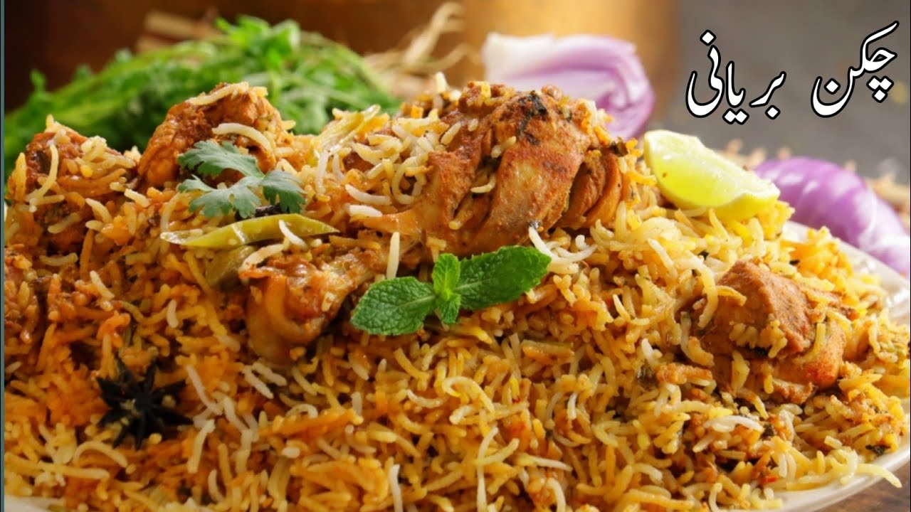
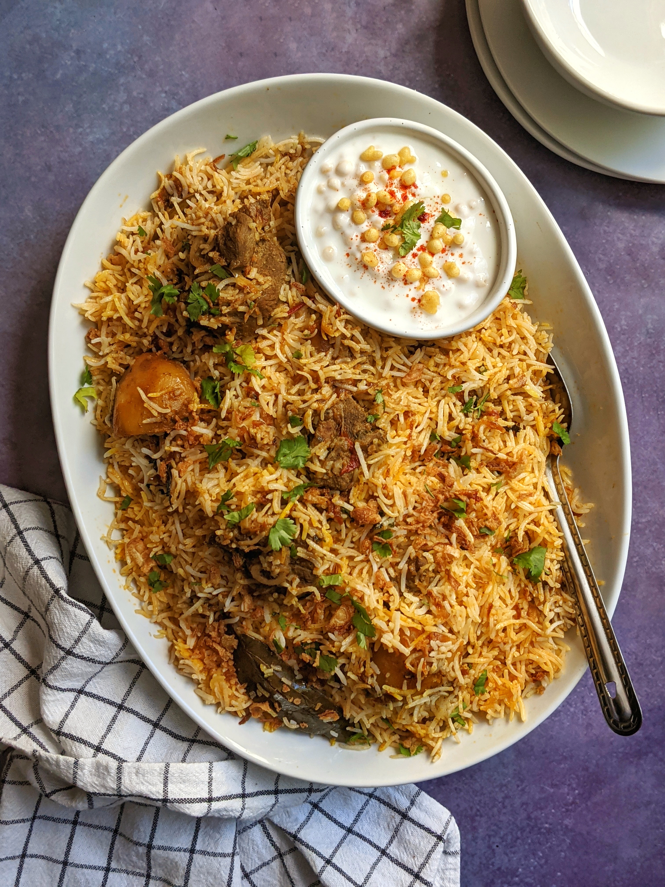
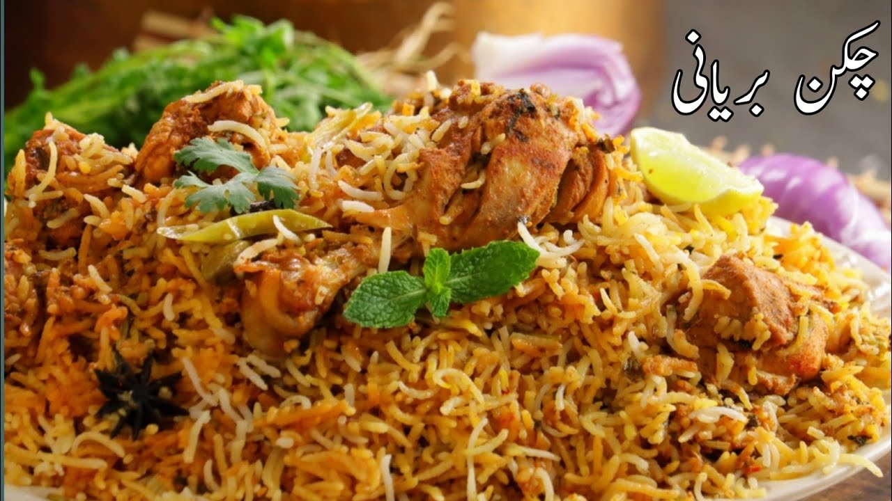
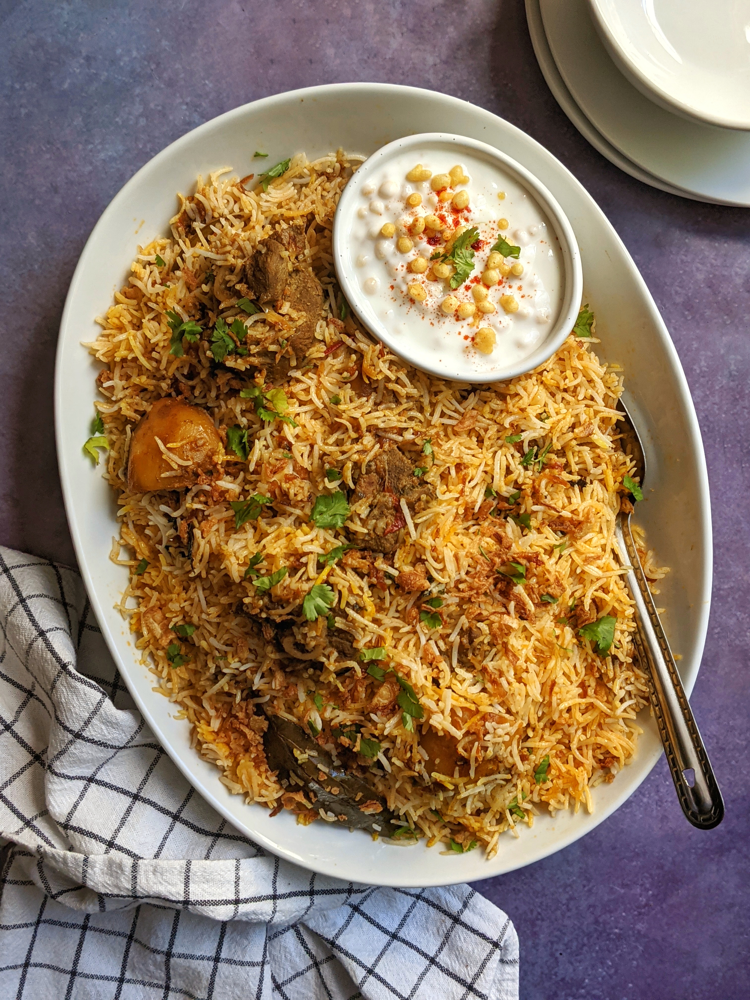

Recipes
Biryani
Origin: India
Source: https://www.indianhealthyrecipes.com/chicken-biryani-recipe/
Category: Main Dish, Comfort Food

Essentially, it is your favourite chicken curry (or vegetable or other protein of choice) buried under a mound of delicately spiced fluffy rice, all made in one pot. The rice is steamed over a low heat so it absorbs the flavours of the curry bubbling away underneath. So in a nutshell, it is every curry loving-carb monsters dream come true. It has got my name written all over it!
- Ingredients
- 750g (1.5 lb) chicken thighs, skin on, bone in, halved along bone (Note 1)
- MARINADE:
- 2/3 cup (150 ml) yoghurt, plain
- 1/2 cup (125 ml) water
- 2 tbsp vegetable oil (or other plain oil)
- 6 garlic cloves, minced
- 2 tsp finely grated fresh ginger
- 1/8 tsp ground turmeric
- 1/4 tsp cinnamon
- 1/2 tsp cayenne (adjust spiciness to taste)
- 1/2 tsp ground cardamom
- 2 tsp garam marsala (Note 2)
- 2 tsp coriander
- 1 tbsp cumin
- 2 tbsp paprika, sweet / ordinary (not smoked)
- 1 3/4 tsp salt
- PAR BOILED RICE:
- 2 tbsp salt
- 10 cloves
- 5 dried bay leaves
- 1 star anise
- 6 green cardamon pods
- 2 1/4 cups (450g) uncooked basmati rice
- CRISPY ONIONS (NOTE 4):
- 2 medium onions (yellow, brown), halved and finely sliced
- 1 cup (250 ml) oil, for frying
- SAFFRON:
- 1 tsp saffron threads (loosely packed)
- 2 tbsp warm water
- BIRYANI:
- 1 cup coriander / cilantro, chopped
- 1/4 cup (60g) ghee or unsalted butter, melted
- GARNISH:
- Crispy onions (above)
- Chopped coriander / cilantro
- Yoghurt
- Marinate Chicken:
- Mix Marinade ingredients in a large pot, add chicken, and coat well. Let it marinate for 20 minutes to overnight.
- Par Boiled Rice:
- Boil water, add salt and spices, then add rice. Cook for 4 minutes until slightly firm. Drain and set aside.
- Crispy Onions:
- Fry onions in oil until golden brown, then drain on a paper towel. Repeat for all onions.
- Saffron:
- Place saffron threads in warm water and leave for 10+ minutes.
- Biryani:
- Cook marinated chicken in a pot, covered, for 5 minutes, then uncovered for another 5 minutes.
- Arrange the chicken skin-side down, add half the onions and coriander, then cover with rice. Flatten the surface.
- Drizzle saffron water and ghee over the rice, cover, and cook on low after steam appears for 25 minutes. Rest for 10 minutes after removing from heat.
- To Serve:
- Scoop deeply to get layers of chicken and rice. Serve in a bowl or on a platter, garnish with remaining onions, coriander, and yoghurt on the side.
 



Chicken Curry
Origin: Japan
Source: Mutual Friend Recipe
Category: Main Dish

Unlike Indian or Thai curry, Japanese curry is more savory than spicy. Its an exemplary comfort food and one of the most-loved home-cooked dishes in Japan.
Recipe Ingredients:- skinless, boneless chicken breast
- 1 tablespoon olive oil
- 1 pinch salt and ground black pepper
- water
- 1 can peas
- 5 new potatoes, halved
- 1 package sliced cremini mushrooms
- 2 medium carrots, chopped
- 1 medium onion, chopped
- 2 cups jasmine rice
- Place chicken in a large, deep skillet. Drizzle with olive oil and season with salt and pepper on both sides. Add 1/3 cup water to the pan, cover, and cook over medium heat until no longer pink in the center and the juices run clear, about 20 minutes.
- While chicken is cooking, pour 2 cups water into a microwave-safe bowl. Break curry sauce mix into pieces and add to water. Heat in the microwave on high for 3 1/2 minutes; remove and stir until sauce mix has completely dissolved.
- Remove chicken from the skillet. Cut into cubes, return to the skillet, and pour curry sauce over top. Stir in peas, potatoes, mushrooms, carrots, and onion. Bring to a boil, then lower heat and simmer until vegetables are tender, about 30 minutes.
- Meanwhile, bring remaining water and rice to a boil in a saucepan. Reduce heat to medium-low, cover, and simmer until rice is tender and water has been absorbed, 20 to 25 minutes.
- Scoop rice into bowls and serve curry on top.


Zucchini Fritters
Origin: Unknown
Source: niftyrecipe.com
Category: Side dish/Main Dish

I found this recipe for zucchini fritters on a food blog when I was looking for quick and easy dishes to make during undergrad. It uses minimal ingredients and can be done in less than half an hour. They are delicious and filling and go great with dipping sauces.
- Zucchini: 2 medium (about 1 pound)
- Egg: 1 large
- Flour: 1/2 cup (all-purpose flour)
- Vegetable or Seed Oil: For frying, approximately 1/4 cup
- Garlic: 2 cloves, minced
- Salt: 1/2 teaspoon (adjust to taste)
- Black Pepper: 1/4 teaspoon (adjust to taste)
- Combine eggs, salt, and pepper and whisk
- Add pressed garlic
- Grate the zucchini and squeeze the moisture out of it
- Add zucchini and flour and mix
- Heat oil in pan and add dollops of batter
- Serve with or without dipping sauce